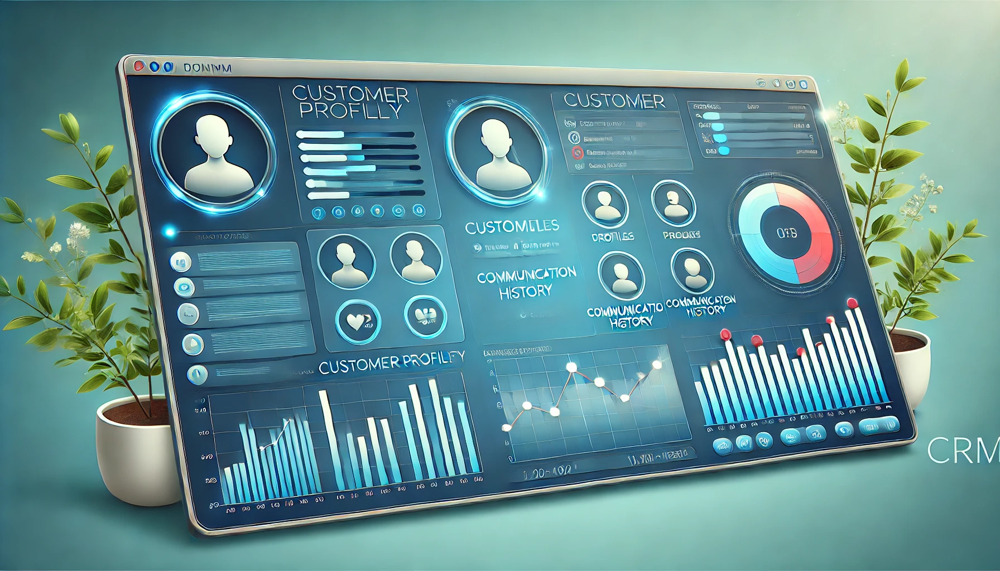

Що таке CRM-системи?
CRM (Customer Relationship Management) — це система управління взаємовідносинами з клієнтами, яка використовується для оптимізації бізнес-процесів, підвищення ефективності комунікацій і покращення клієнтського досвіду. Вона об'єднує в одному інтерфейсі всі дані про клієнтів, допомагаючи бізнесу будувати довготривалі стосунки та забезпечувати високий рівень обслуговування.

Як працює CRM?
CRM-системи автоматизують ключові аспекти взаємодії з клієнтами:
- Управління контактами: створення та ведення бази клієнтів.
- Автоматизація продажів: відстеження угод і прогнозування доходів.
- Аналіз даних: побудова звітів про ефективність роботи відділів.
Переваги CRM
Використання CRM дозволяє:
- Підвищити рівень задоволеності клієнтів завдяки персоналізованим підходам.
- Забезпечити єдину базу даних для всіх департаментів компанії.
- Покращити ефективність команди продажів.